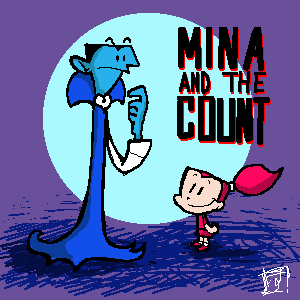

(日記とか言うモノ)
もう最近は休日もへったくれもありませんよ。ったく。そろそろ学生の休みも終わって、また電車が混むんだろうか。ってもうそんな季節かよー。ついこのあいだ正月だったような気がしたんですが、ヤヴァイですか？
はっ！正月といえば、うちのトップ絵・・・正月のまま・・・・
ｶﾞ━━━━━━（゜д゜;）━━━━━━ﾝ
すっかり忘れてました恥ずかしい・・・・もとに戻すのもなんなんだし・・・せっかくだから入れ替えたいよねえ・・・・・・・でも時間が・・・・気が付かなかったことにしました。＜ダメすぎだ
それはそうと、Rob Renzettiさんの「My Neighbor is a Teenage Robot」ですよ！ロボっ娘ですよ！
ヘソだし、ミニスカ、ツインテールの女の子ロボ、XJ-9。しかし彼女は自分のことをジェニーと呼ぶ。
いじらしいじゃないですか(;´д⊂)ﾎﾛﾘ
生みの親のマッドサイエンティストが女性というのも珍しい。生体アンドロイドではなく、金属製ってのもイイ。それにしても、地球の危機というと隕石の落下というのは、パターンなんでしょうか？アメリカ人のもつ隕石に対する恐怖ってのはきっと日本人にはわからないんだろうなあ。パワパフでもよく落ちるし、古くはメテオなんて映画もあったなあ。面積が広いからきっとしょっちゅう落ちてるんじゃないだろうか、隕石。
しかし、烈海王先生ではないですが、日本アニメにとってはすでに遙か昔に通りすぎてきた場所って感じです。リミットちゃんとかあったしな。ちょっと違うけどビートンとか。今じゃちょびっツとか攻殻機動隊とかもっと先の次元にいってますしね。スピルバーグのA.I.とか「いまさらかよ」ですし。
でもね、これはあのアイアンジャイアントを見たときと同じような感覚。古きよき時代のトキメキがじんわりとクルんですよ。ああ、続きがみたい。シリーズ化してくれ〜。
なんかデクスターにゲスト出演しても違和感ないかんじなんですが、この作品は実はかなり重要な位置にあるといっても過言ではない！アメリカ人はミュータントとか、ケモノとかは大好きなんですが、足りなかったのはロボット萌え！
トランスフォーマー系のロボット・クールとは違う、ロボ少女萌え。さりげに異端な「My Neighbor is a Teenage Robot」！
思春期の少女ロボってことで、いろいろ悩みそうなんで、もっと見てみいですねえ。つくってよRob！
あっ！そーいえばデクスターズラボでママロボット（戦え！ママロボット）の回をやってたのってRob Renzettiさんですよ！すでにロボ萌えだったんだこの人（しかも女性型）
ん、「ロボットの恩返し」の回もRobさんだ・・・やはり・・・
ネットとかやってて、BBSやチャット、はたまたサイトの文章や日記なんてものを読んでいると、会ったこともないその人がいつのまにかできあがってくるもので、この印象ってのはどのくらい正しいものなんだろうねえ。
素のままが出てる人もいるんだろうけど、別人格を憑依させてる場合もある。私なんぞも、別のハンドルで、このてのものとは違ったところに出没しているときは、もうすこし理屈っぽかったりする。
・・・・・・つもりなんだけど、はたからみるとあんがいそーでもなかったりして（笑）
もっとも、どれが正しいもくそもないんだよね。オフラインでだって、相手にする人やグループによって対応が変わってくるものだしな。
だから、カッテにこの人はこういう人って思いこんでもいいのかもしれない。そもそもよく考えたら、人格についてなんの印象もないっていうのも無理な話だ。まあ本人にしたら、レッテルをはられるのはいやだろうから、直接あなたはこういう人、みたいなことは言わないけどさ。
でも、会ったこともないネット上だけの知人たちをいろいろと想像します。
ああ、この人は寂しがり屋なんだなあ。がさつそうだけど、なんだか繊細みたいだ。いつも淡々としていて、すげえマイペースな人だ。気さくな感じだけど、へんなところにこだわりをもってる人だ。優しくて女神のような人だ。趣味は悪くないんだが、センスがヘンな人だ。とかね。
それとは別に年齢や性別がわかったりしたときに驚く時もたまに。特に公開していなくても、なんとなく年代がにじみ出て来るときとかあるじゃないですか（たまにぽろっと書いちゃう人もいますが）。もっと大人のイメージがあったのに実は中学生だった！とか。女性とばかりおもってたら、男だったとか！（別に本人はネカマではなくこっちがカッテに思いこんでいた場合ね）その逆もあったり（笑）それで印象がさほどかわるわけではないんですが、純粋にネットってスゲエなあと感動するわけなんですよ。なにしろ、まともに生きてたら絶対に一生会うこともない巡り合わせだものねえ。
さて、そんなこんなで、いったい私こと「スカポン太」はいったいどういう人だと思われているんだろうか？そこでできあがった、皆の中にある私の外観というのはどういうものなんだろうか？ちょっと気になる〜。なよなよっとした美少年？それとも脂ぎって頭が薄くなったおやじ？デブですか？チビですか？マッチョですか？ロンゲですか？メガネ君ですか？スレンダーですか？目は大きいですか？笑顔ですか？しかめっつらですか？おしゃれな服を着てますか？靴下に穴があいてますか？それとも、実は女性なんじゃないか、とか思ってる人いるかな〜。（このように、本人がなにげなく書いた文章で、性別がわかったりするものなんですよ）
お絵かきチャットかなにかで、○○さんのイメージはこんな風なんて互いに描いたらおもしろいかも。
噂に聞いていたアンジェラアナコンダのプロトタイプ見ました。
CNではなく、ニコロデオンのカブラーム内。
タイトルもそのまんま「アンジェラアナコンダ」だし、キャストもいっしょ。でも・・・
アンジェラ顔長〜〜〜Σ(ﾟДﾟ)。ナネット、キモ〜〜〜ヽ(`Д´)ノ
本放送のデザインのほうがイイなあ。特にナネット・・・・
しかも、この話、アンジェラのパンチラ話ですか（笑）まあ、画面にはでないんだけどさ。
やっぱり今週も激忙しくなりそうで、やっといてよかったレビュー。あわてて書いたので誤字だらけ。まあいつものことか(笑)（直おしたよっ！）
CNではカートゥーンカートゥーンショウが復活したみたいだけど、あいかわらずですねえ。たまにヒットがあるからやりにくいよなこの番組。個人的にはニックのオーイェイカートゥーンの作品群のほうが好きです。ミーナもあるしな。今回のミーナはカエルの解剖ネタですか。フランケンのモンスターとして復活するカエル。フランケン・ウィニーを思い出したよ。ミーナを助けるために真昼にもかかわらずかけつける伯爵カッコイイ。
ケータイのパケットが膨大で心臓とまるかと思ったよ。ケータイ用Webで表示される画像がどうもパケット増加の原因だとわかり、あわてて表示しない設定に。パケット制だと特に重いページは最悪だなあ。高速通信なんでストレスなく見れるのでうっかりしてたよ。まあ、アプリも調子にのってガンガン落としたのが原因でもあるが。着メロも試聴だけでけっこう喰ってたんだなあと思い、ダウンロードしても試聴しても喰うパケットはいっしょなんで、試聴せずに一気に落とすことに。やっぱ金からむと必死になるなあ。
いまやらずしていつやる！てなかんじで、レビューを書きましたよ。今回は早かったね自分。
それにしても容量不足がきつい。そのせいかFTPエラーがでまくりで、まともにアップできなくて泣きそうになりました。しょーがないからwebからアップしたけど。さーて次回までにどっかさがさなくっちゃな。
それはそうと、携帯をかえました。ていうか携帯にかえました。前はPHSだったんすよ、しかもアステル！
気が付くとどんどんマイナーなほうに流れてゆく性格がうらめしい。
さほど不満はなかったんだけど、ここ最近妙に受信状況が悪くなったきたのと、（交差点の真ん中で圏外ってのはねーだろ、アステル！）カメラ付きだのなんだのてのがうらやましくなってきたのが乗り換えの原因。アステル端末って全然新機種がでる気配ないうえに、もう売ってるとこないんだもの(=TДT)ｸﾞｽﾝ
せめてDポにしときゃよかった・・・そーすりゃきっとエアーH"ホンにでもしてたかなあ・・・
で、結局、ドコモはいやだし、J-Phoneはみんなもってるからなあってことでauにしました。さすがにツーカーは・・・アステルの教訓を生かしてやめました。みんなもってないやつ・・・なんて基準じゃきっとまた後悔するハメになるんだろーか。
しかし、最近のケイタイは凄いね。アステルの端末ってば5年前から進歩してない感じだったので、最新機種のケイタイ端末に変えたらカルチャーショック！MS-DOSから一気にXPに移行した感じって言えばわかるでしょうか。ガーン！多機能過ぎて、全機能把握するのに徹夜しました。浮かれてガンガン通信とかしてたらパケットがとんでもないことに・・・あわわわわわ。
さっそくパワパフのサイトにアクセスしたけど、結局登録はやめました。さすがに、着メロとかちょっとハズいし・・・待ち受けくらい自分で作るしな。
それにしても、ちょっと使っただけでわかったけど、ピッチはやっぱ圧倒的に安いわ。ケータイ安くなったってもやっぱ高いです。つーかアステルが安かったのか？1分10円だしな。（ま、ケータイにかけるときはそれなりだが）アステルの場合、着メロも公式から落とせばタダだしな。（公式しかないって話もあるが）
でもカメラ付きは楽しい。カシオの最新のやつなんで、VGAサイズのズーム付きですよ、マクロも出来ますよ、ムービーもOKですよダンナ。初期のデジカメ以上か？すげえ。ま、これらまともにメール転送してたら金がもたんので、うまくPCと連動させてなんとかしのぎますかね。そーいや、ケータイって電池の消耗も激しいね。アステル端末、2週間くらい充電しなくてももったのになあ。まあ電気消耗するようなことは、はなからできませんでしたが。
とか、友人にも話したら、「カメラとか、いろんな機能に夢中になるのは初めだけ。結局普通にメールと通話以外めったに使わなくなるって」って言ってたけどそーなんですかね〜。
PPPPPPGのパワパフテトリスとか野球とか、ソースちょっといじってビルドしなおせばケータイでも動くのかなあ？などと考えてたり。JAVAだし。ま、いじれませんが。
あーもうしょうがねーなあアメリカは。もしこれがブッシュじゃなくてゴアだったら・・・といつも考えてしまう。でも大統領一人でホワイトハウスを動かしているわけでもないので、結果が別のものになるという保証もないんだけど、これほどまでに強硬なやり方はしないんじゃないかと思うんだけどねえ。もともと軍縮をうたってた人だけに。（そのせいで、軍関係の票が集まらなかったんだけどさ）
「戦争にからむことは何でも反対」な人もいるけど、世の中なかなかそうもいかない。
例えば、たまに利用させてもらってるAccess to LOCAL CITYというサイトがあるんだけど（ここの神話事典は特に）ここに、世界軍需企業一覧というコンテンツがある。これ見ると軍需企業にお金を納めていない人は日本にはいないんじゃないかと思うよ。あ、なにげに親父の会社も載ってるよ(笑)
HDレコーダーほしーなー。いーのないかなー。とか思って探してたら、むむっとくるものがありました。
シャープのガリレオ すでにHDレコーダーじゃなくてホームサーバー。
HDレコーダーはもちろん、無線LANもついてるうえ、WEBサーバにもなる。すげえ！しかもMPEG4へのエンコードも可能かよ！便利！うわーこれいいかも。お値段は・・・実売で約10万か。二昔前のビデオデッキがそのくらいしたこと考えると安いかも。ネット接続可能だから、録画したやつを外でも見れるのか。いいかも。
よーし、来年買うぞ〜。＜来年かよ！
いや〜、初代機ってなにかと問題あるじゃない。3世代目くらいがいい感じになってるものじゃない。こーいうのって。使い勝手とかさ。（はっ！これはもしや買えない病かも）しかし、やっぱこのジャンルは将来性アリだね。希望が出てきたよ。
でも、こーいうのって、予約録画は地上波メインでCS録画は激しくダメそう。なんとかなりませんかねえ。
私の友人がね、自慢するんですよ。
「いやー、ワクチンソフト買って試してみたら、でるわでるわ、ウイルスだらけ。まいっちゃったよー」って。
ちくしょー！悔しいから私もアップデートしてワクチンソフトを試してみたんですよ。結果は0。くやしー。
いいことなんでしょうが、なんかくやしい。病気自慢みたいなやつで不毛なんですが、でもなんにもないのも寂しい。どーせ、どーせMacだよっ！ワクチンソフト意味ね〜！OS
Xだったら多少はあるのかなあ。
アレですよ、みんな風邪とか花粉症とか流行に敏感（？）なのに、めちゃ健康なせいで話題にのれなくて仲間はずれになったような感覚。昔はウイルスといったらMacだった時代もわずかながらにあったんですけどねえ。インターネットといえばMacてな時代も・・・・
やっぱりダメだね。進化の袋小路。進化って多様性だから。OS Xだろうと閉鎖的環境では、どーにも先がないよなあ。いくら先進的なことしたって先細る一方だ。どんなジャンルにしても、クズのような、ゴミのような、どーでもいいような、勘違いのような、有象無象のものがあふれる状況にならないとそのジャンルは熟成しない。というのが私の持論。いーものばかりではダメなんですよ世の中は。
関係ないけど、大塚康生ってモンキーパンチのことモンキーさんと呼ぶのか・・・
【大塚康生のWeb峠の茶屋】大塚版漫画ルパンの裏話とかあったりする。
HDレコーダーが欲しい今日この頃。
あんまし画質とかにはこだわらないほうなんで、いわゆるDVDクオリティにはさほど興味はわかないんですが、HDレコーダーは便利そうだなあと。なにが便利そうかっちゅうと・・・
逆に言えばビデオでなにが不便かっちゅうと、リニアであるってとこなんですよ。ひらたく言えば順番に録画されるってこと。もっと具体的にいえば、いろいろ録画予約とかしとくわけじゃないですか、そうすると一本のテープにいろんな番組がごっちゃになってしまう。気分的には一つにまとめたいのに、そうならない。そりゃ、一日TVにはりついてテープ入れ替えできればいいけど、それじゃ予約の意味ないし、あとでダビング編集なんてのは時間的に無茶な話。
デジタルだとデジカメ感覚で必要なものだけチョイスして、かつ不必要なものはぽいっとなかったことにできる。それに、なにげにとっていた番組の中や隙間にお気に入りな映像とかあったばあい、そこだけ抜き出すってのがテープだとヒジョーに難しい。いや、その、たった数分のためにテープ一本キープしなきゃいけないモノってのがけっこうあるんだよねえ、これが。
まあそんな感じに思い描いているけど、実際のHDレコーダーの使い勝手ってのはどーなんでしょう？なんとなく、せめてあと半年いや一年は待て・・・って心の声が聞こえてる今日この頃。
業界はDVDで押してるけど、VHS3倍で十分な自分としては、DVDクオリティでなくともMPEG4クラス（DivXとか）でアウトできればいーんですけどねえ。そのほうがいっぱいとれるし。再エンコとか簡易編集機能とかがちょー楽になったら多分買う。方向性としてそーいうのあるのかな〜？どーなんだろ〜？とか考えているのでまだ買えないのです。・・・あと値段か。
なんとなく、地上波デジタルに完全切り替わったら、一気に普及すると予測しているがどーだろね。
「でも、会いたいんだよ！好きなんだよ！とっても、とっても、あの子が！」by 伯爵
てなわけで、モンスター仲間にも白い目で見られながらも、夜な夜なミーナと戯れる伯爵の魂の叫び。ユートニウム以上に重傷ですな伯爵。。。
今のは前回のセリフですが、今回もいいですな〜「ミーナと伯爵」。今回はミーナのゴスコスプレですよ。効く〜。ゴス好きの私としてはたまらんちん。ミーナかわいすぎだ。
そーいえば、ちまたの噂だと一部ケーブルでは、配信される局はケーブルの会社が決めるみたいで、カートゥーンネットワークからアニマックスに変更されてしまい、見れなくなるみたいですね。ニックも見れなかったり、見れても一部のみとか。あー、CSでよかった。
なにげにX-MENエボに慣れてきました。いや正直オリジナル版とはキャラの性格とか微妙に違っていて抵抗あったのよ。なぜにX-MENに高校白書をさせる意味があるのか！オリジナルでいいじゃん！とか思ってたんですよ。バットマン・ビヨンドと比べてもヒーロー感ないし。
とか思ってたんですが、間違いでしたな。Xエボはヒーローものじゃなくて、学園モノ。どっちかっていうと「うる星やつら」みたいなもの。特に今回のダンスパーティみて思いました。いまさらですか。いや、なかなか固定観念というものはとれないものなんですよ。
そうしてみると、ナイトクロウラーことカートはいいねえ。続きが楽しみ。なにしろ、ミュータントはミュータント同士でくっついちゃうパターンの多い中で、パンピーの彼女ですか。微妙なとまどいがたまりません。しっかし、サイクとジーンの優等生カップルはどーしようもねえなあ。ローグのあねごは男より女にもてるというパターンでしょうか。いや、いいけど。はやく、ガンビットでてこーい。
ところで、やっぱり人気があるのはカートですかね。私も好きですが。とりあえず、原作ぬきにして、Xエボだけでの話とすると、ナイトクロウラー、ウルヴァリン、シャドウキャット、ローグあたりが魅力的に描かれているのでこのあたりは人気あると思う。逆におばさんジーンや、なんかぱっとしないスパイクとかは人気なさそう・・・
評価が分かれるのは、サイクロップスかな。たまにムカつくんですが、そこがサイクロップスらしくてなんか好き。あと、クイックシルバー。お父様は偉大なんですが、こいつは小さなグループのお山の大将的小物。いや、あの器の小ささぶりがいいんですよ（笑）
ビーストはもともと好きだっただけに、もっと活躍してほしいのですが、ひきこもり先生だからダメかあ。そーいや、エンジェルってなぜか好きじゃありません。
ちなみに、Xエボはあくまで番外編パラレルワールドの話。X-MENのハイスクール時代の話ではなく、メンバーが高校生だったら・・・？といったifの世界ですんで、誤解無きよう。
下の日記書いたのが昨日のような一週間でした。メチャメチャ忙しかったのに、いったいなにをやってたんだか、記憶がぶっとんでます。寝た記憶もあまりないのも悲しい。こうしてあっと言う間に歳を重ねていくのかと思うとさらにわびしい。
とりあえず、明日はミーナと伯爵ですよ。オーイェイカートゥーンのエピソードリストを探し当てチェックしました。どうもこの時期はシリーズ化してる作品が多くなっていて、ミーナは二回おきに放映される。ニックの放映日程からすると毎週日曜のオーイェイがミーナの回だ。そのうちティーンエイジロボットもやるようで、楽しみ。
そろそろかと思ってカートゥーンネットワークの4月の番組紹介を見にゆくとビックリ。最近のCNって動きが激しいように感じるのは私だけ？
まずは、ビックオーが正式に放映決定予告がされてましたな。やっぱりTOONAMI枠。特番もアリとさすがに気合いはいってますね。脚本の小中さんはパワパフ好きなのかフムフム。んで、探してみるとこちらが小中さんのサイト。
ん、なにげにビックオーの脚本がPDFでアップされてる。青6もやるのか・・・ゾーンダイク・・・。ん、なんか新しい枠が出来てるね。「TOONAMI N.I.N.J.A.」日本アニメ版TOONAMIってとこか。
4月はスヌーピー特集ですが。スヌーピーは好きだからいいね。欲を言えばチャーリーブラウンの声は谷啓で。関係ないけど、クレイジーキャッツの作品では「クレージー黄金作戦」が最高だな。狂ってる。ありえない。それよりも気になるのは今回の作品にシュローダーは出ているかってことだ。シュローダー好きです。ドカベンで言えば殿馬（違うか）
それよりも、ガーフィールドとガジェット警部ですよ！これみたかったんだ〜。
最近別のBBSとかでも、ガーフィールド見て〜とか、ガジェット警部見て〜とか書きまくってたんですよ。したら、これですよ。まさかCNいろんなカートゥーン系BBSとかチェックしまくってるんでしょうか？いや、偶然・・・だよな。でも、可能性も無きにしもあらずなんで、アレ見たいコレ見たいとか言いまくってるとホントに実現するかも。とりあえず、グリム＆エビル、日本でも放映してくらさい。Space
Ghost Coast to Coastも！あとfuturamaも！！あ、ミッフィーちゃんのアニメも！そーだ！ピンクパンサーのアニメ版も！！！
なにげに、のらくろくんが終わって、そのあとにカートゥーンカートゥーンショーがはじまるのがうれしいね。
ゴーストとUバードは土日枠に移動ですか。まあこれはこのくらいのペースのほうがいいです。
4月は充実している気がしないでもないが、問題は見てる時間があるかということだな。
はーい、マーブルコミック日本人作家スカウト部でーす。 なーんつってな。
わたしダス。関修一ダス。
嘘ダス。大統領ダス。
たいへんダスよ〜、やっとまったりしてたのに明日も仕事とかメール来たダスよ〜。心はタフになっても、体がいうこときかないダスよ。めちゃブルーダスよ〜。
せっかく、明日はブリスターに寄って「やーいNHKに取材されてんのにカットされてやんの〜。NHKはアメコミ買いに来ただけなんだぜー」とか言って店員をからかってやろうと思っていたダスのに。
なんとかしてーくだーさいっつ！
気が付けばこの前の日記から5日ぶりの日記。
ハードな生活も、慣れるものなんだねえ。時間が無いことは一緒でも、精神的にさほどクルことはなくなった。人間の適応力には感心するね。
なにげにこの日記を見てくれてる人がいっぱいいてくれてるみたいで、BBSではいろいろ報告があって、情報の精度があがってゆくのはよいねえ。やっぱネットは凄いや。
一応、ここしか見てない人向けにネタのフォローをしとくか。
ビックオー：もうやってました。地方局とかで。
ルパン実写：すでにありました。「ルパン三世・念力珍作戦」
ミーナと伯爵： もともとRob Renzetti制作のもので、マクラッケンはキャラデザ。CNでやったものがどうやら最初で、以後ニコロデオンのオーイェイカートゥーン内でシリーズ化。なんか５,６本あるみたいね。
しかし、このままいくとレビューは一ヶ月遅れとかになってシャレにならん。次の号でちゃうよ。
はっ！いかんいかん。「更新しなくていけない」 状態になるとサイト運営は苦痛になるので、この状態はよくない。
てなわけで、もし期待してる人がいたら申し訳ないが、「自分締め切り」など設定しないでマイペースでやらせていただきまーす。
「やれーば、できーるよ、できるよやーれば〜。やるしかないんだから、やらなきゃだめですよ〜」なんて歌を最近ちょくちょく耳にするが・・・・ほっとけ！ おめーに言われんでも「やらなきゃならんこと」は、やってるよ！
むしろね、「やらなければ」と思ってることの大半はホントはやんなくてもいいことなんだよ！大丈夫！キミがやらなくてもダレかやる。キミがいなくても世界は動く！ ・・・とか言ってください
で、関係ないんだけどね、CSをぼーっとみてたら、カルチャークラブのMTVとか流れてんの。なつかすぃ〜。あらためて聞くと、めちゃくちゃけだるい曲だわこれ。うわーボーイジョージやっぱ頭でかい。そしてヘン。大笑い。
気が付けば3月。そうか2月は短いんだっけか。どんどんレビュー更新のペースが落ちてますが、勘弁してください。
最近日記なんだか、雑記なんだか、裏ニュースなんだかよくわからなくなってきている「日記」ですが、まあいいですか。半分は自分メモみたいなものですから。
前回のニュース補足〜！
「ビッグオー」
この作品、実はCNとはかなり関係が深い。日本では全26話を予定していながらも、興行的にイマイチだったため13話で終了することとなった。しかし、これが米CNで放映、反響を呼び、一時は立ち消えとなったシリーズが復活することとなったのです。14話以降は"Second
Season"と銘打たれ現在製作中とのこと。日本のファンはなにやってるんだ。放映の詳細はわかりませんが、もしかしたら新作はアメリカのほうが早いかもしれませんねえ。
Giant Robot Week
エヴァはやっぱりかなり修正はいりまくりらしい。ミサトさんが水着でフロに入ってたり、部屋から酒がなくなってたり。（笑）ペンペンもいなくなってた？って話ですが、すごいですね。修正スタッフもたいへんだなあ。
ルパン3世 実写
探してみたら、すでに実写化されてました＞THE
"REAL" LUPIN III PAGE。
えーと・・・・・（笑）よくやるなあ。
ミーナと伯爵（前回間違いニーナじゃなくてミーナ）
ニコロデオンのオーイェイカートーンで流れた、「MINA AND THE COUNT」ですが、カートゥーンネットワークでやっていたやつはマクラッケンさんでしたが、こちらはRob
Renzettiさん。このRobさん、やっぱりCNとも無関係じゃなくて、つうかバリバリ関係者。いわゆるゲンディ組の人。パワパフやデクスターやらジャックやらも関わっています。この人の作品はオーイェイカートーンでもちょくちょく見れるんですが、どれもいいわー。
他に「My
Neighbor is a Teenage Robot」ってやつもやってるみたいなんですが、これ見たいよ〜！そのうちNICKでやるかなぁ。
